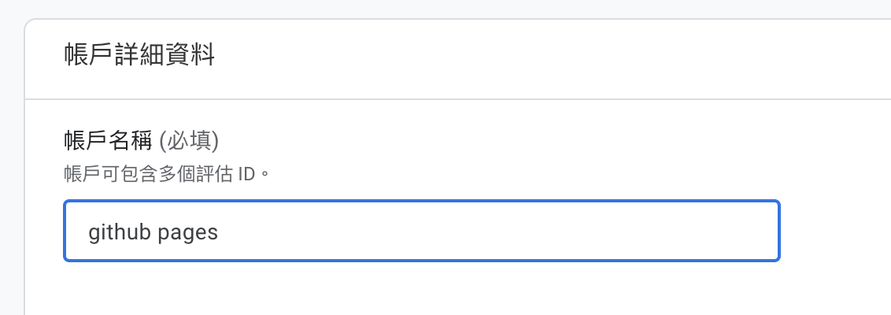
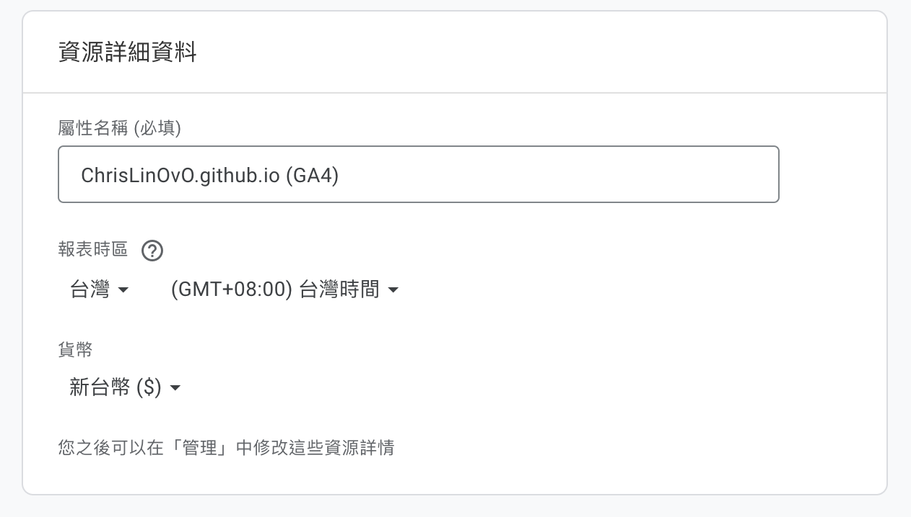
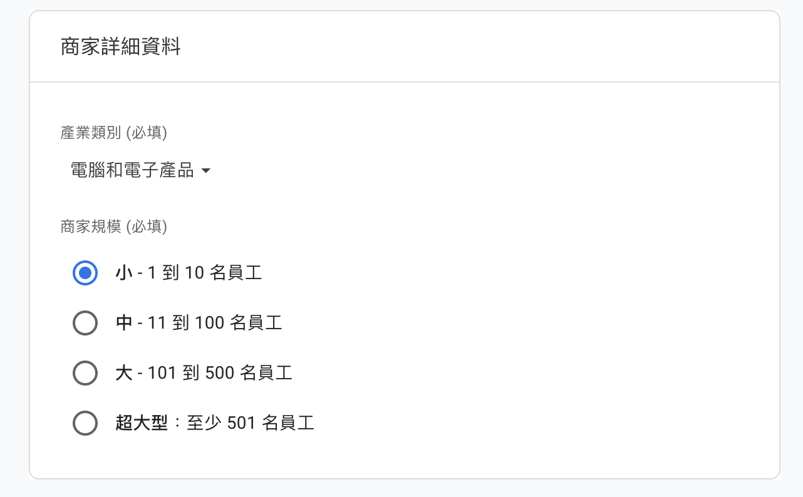
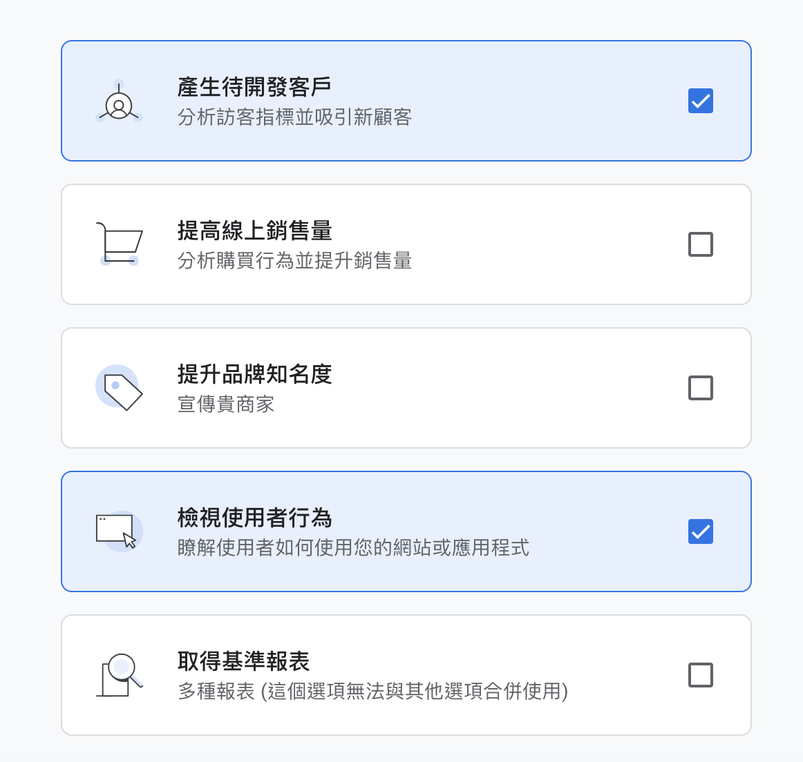
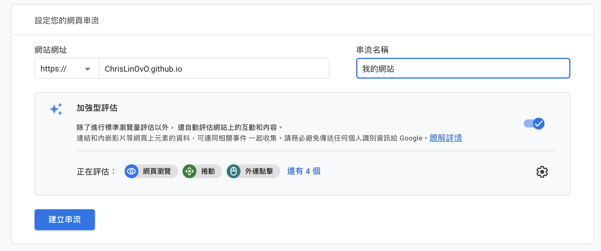
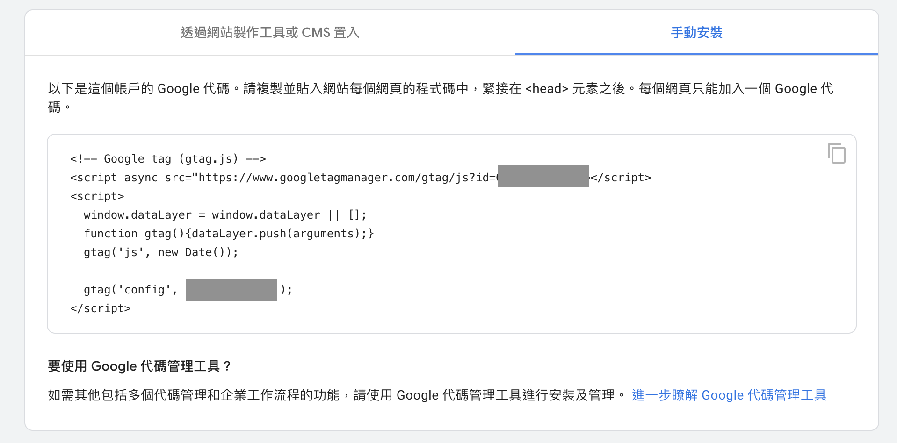
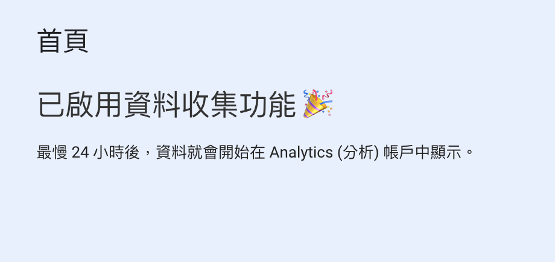

Hugo 添加 Google Analytics
前言
想查看使用者對於我的網站網站互動
開始添加 Google Analytics
步驟 1：點擊 Google Analytics，後按下「開始測量」，就可以開始設定
步驟 2：建立帳戶
輸入帳戶名稱後，往下拉下面不用改，按下一步。

步驟 3：建立資源
輸入屬性名稱，下面報表時區、幣別可以不用改，按下一步。

步驟 4：選擇商家資訊
選擇產業類別(平常寫的文章什麼類型)，按下一步。

步驟 5：選擇業務目標
這裡我是選擇「產生待開發客戶」、「檢視使用者行為」，這兩個都可以透過事件追蹤功能來記錄關鍵的互動，按下建立。

步驟 6：著手收集資料
點選網站平台後，設定您的網頁串流，輸入網站網址及名稱後，建立串流。

步驟 7：加入 Google 代碼至主題
建立完成後會出現「網頁串流詳情」，這時按下「查看代碼操作說明」，會出現手動安裝代碼，
將代碼貼到themes/layouts/partials/head.hml裡面即可。

如果是下載比較新版的主題，要把舊版 GA 設定刪除，需在
head.html原本設定的 GA 以及config.toml裡面googleAnalitycsID移除
步驟 8：確認 GA 與個人網站連結成功

結語
看完以上內容，可以完成加入 GA4，至於 GA4 的靈魂「事件」可能研究過後整理一篇文章做介紹。